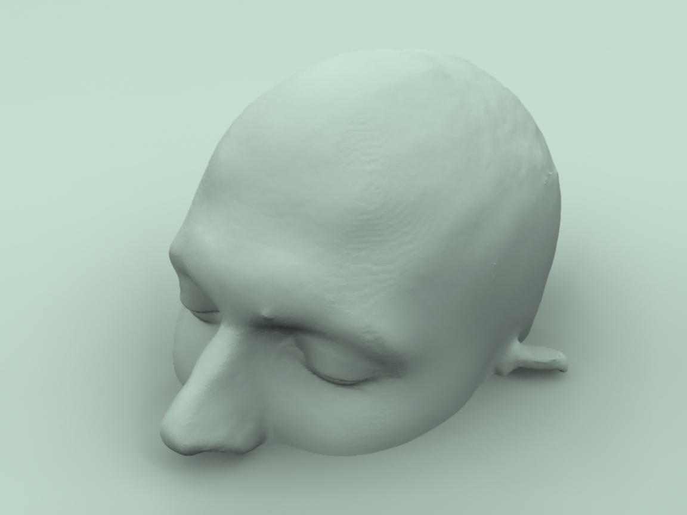
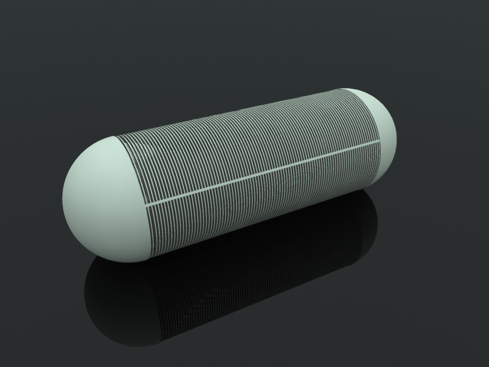
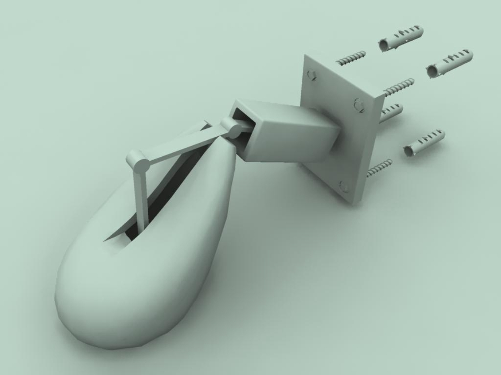
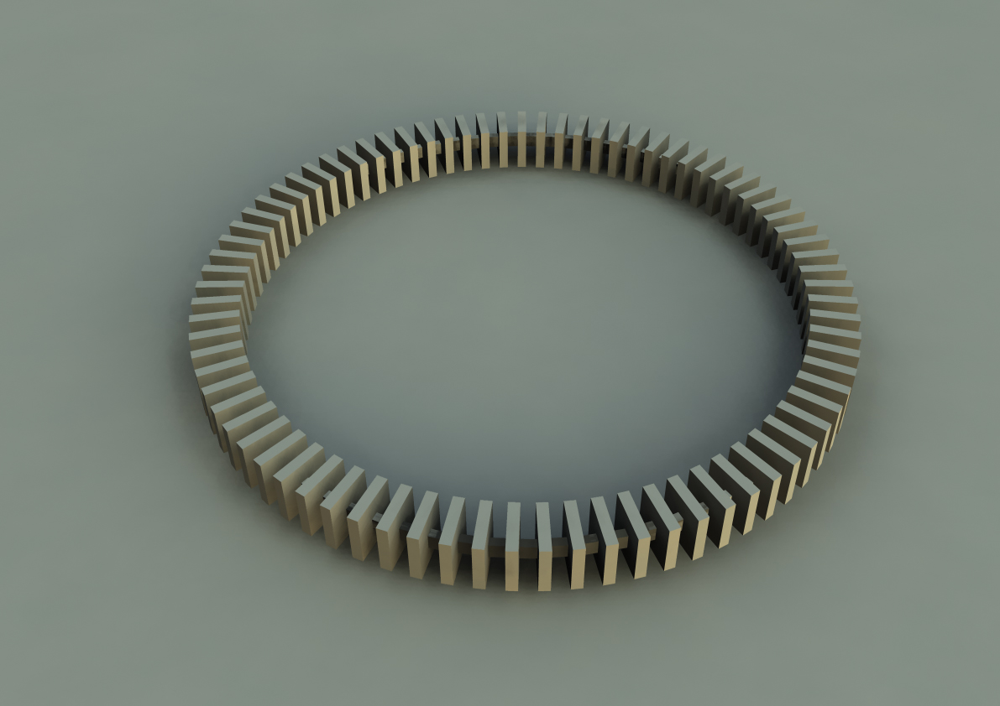
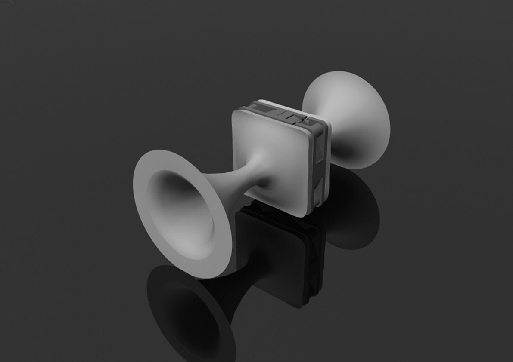
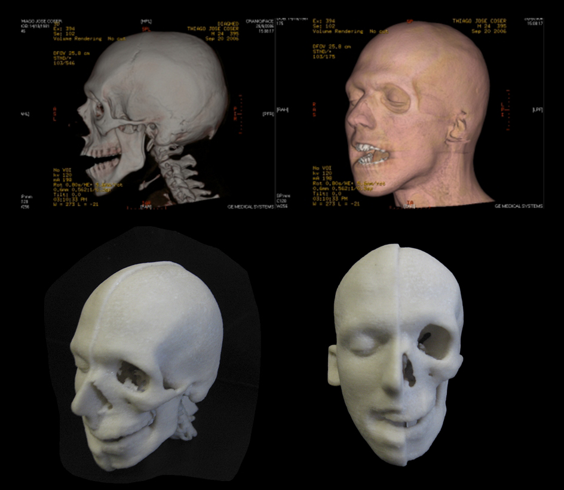
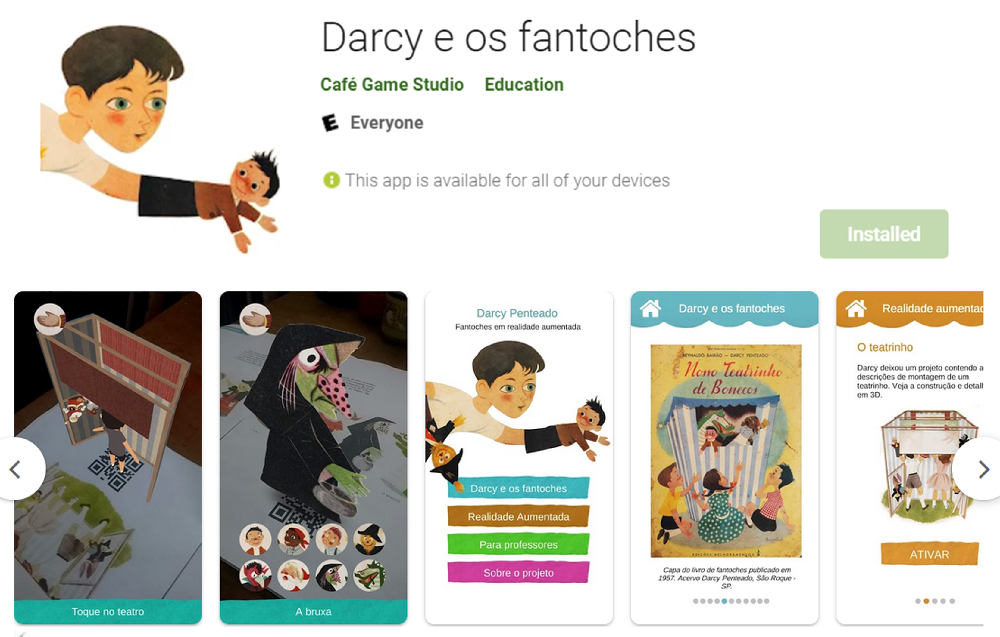

Modelagem e Impressão 3D
Mestrado em Artes Visuais
Meu trabalho de Mestrado foi o primeiro trabalho na área do Brasil, ao investigar as relações entre as poéticas de Arte e Impressão 3D, antes da tecnologia se democratizar. O trabalho foi realizado em conjunto com o CTI — Centro de Tecnologia da Informação Renato Archer, centro de tecnologia de excelência no país, em 2010. Este trabalho teve diversos desobramentos de pesquisa e participação em projetos de mercado, incluindo projetos para grandes empresas como Petrobras e Volkswagen, sendo um centro eterno de pesquisa, projetos e disciplinas em tecnologia 3D.
Imagens






Arte Generativa
Experimentos tridimensionais
Tenho interesse em Arte Generativa, focando no uso poético, estético e no design de interfaces interativas.
Imagens



Realidade Aumentada
Acessibilidade e Tecnologia
Seguindo princípios da Bauhaus, devemos pensar produtos de grande escalabilidade social, o qual é o Castelo da realidade aumentanda e mista. Ambas tem um potencial de acessibilidade cultural muito grande, motivo que projetos de arte e cultura podem ter ganhos enormes com seu uso. O projeto Os Fantoches de Darcy Penteado resgata parte da produção do artista brasileiro Darcy Penteado, com um recorte sobre sua produção de teatro e fantoches. A publicação da pesquisa, em formato de livro, foi possível através da contemplação do edital Aldir Blanc.